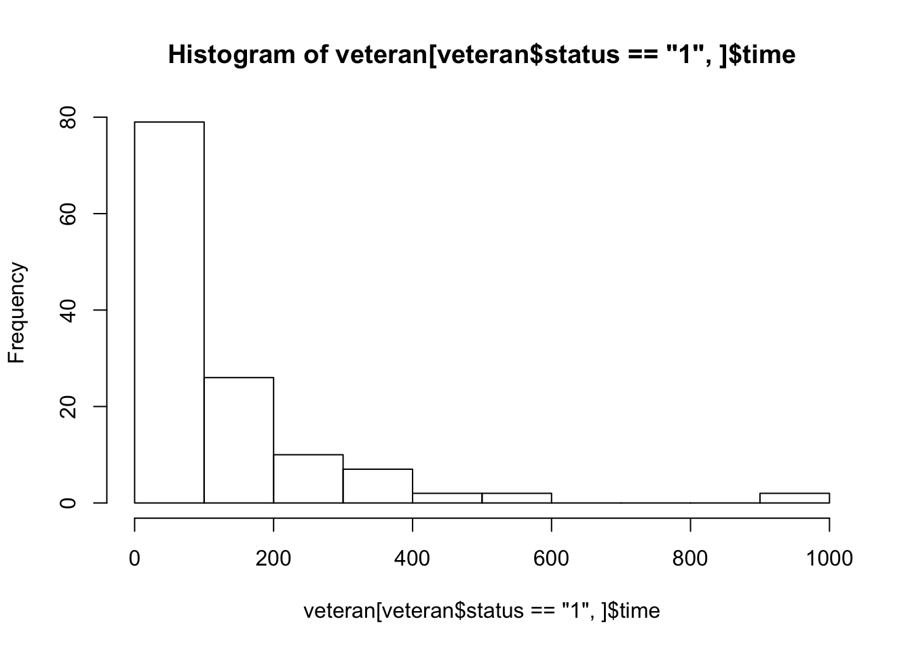

Last updated: 2018-01-08
Code version: ca6e6f8
Tutor: Rebecca Stellato
library(survival)
data("veteran")
str(veteran)'data.frame': 137 obs. of 8 variables:
$ trt : num 1 1 1 1 1 1 1 1 1 1 ...
$ celltype: Factor w/ 4 levels "squamous","smallcell",..: 1 1 1 1 1 1 1 1 1 1 ...
$ time : num 72 411 228 126 118 10 82 110 314 100 ...
$ status : num 1 1 1 1 1 1 1 1 1 0 ...
$ karno : num 60 70 60 60 70 20 40 80 50 70 ...
$ diagtime: num 7 5 3 9 11 5 10 29 18 6 ...
$ age : num 69 64 38 63 65 49 69 68 43 70 ...
$ prior : num 0 10 0 10 10 0 10 0 0 0 ...ANOVA on survival time (ignores censoring).
fit <- lm(time~celltype, data = veteran)
summary(fit)
Call:
lm(formula = time ~ celltype, data = veteran)
Residuals:
Min 1Q Median 3Q Max
-199.20 -63.11 -23.11 30.89 798.80
Coefficients:
Estimate Std. Error t value Pr(>|t|)
(Intercept) 200.20 25.00 8.009 5.12e-13 ***
celltypesmallcell -128.53 32.87 -3.910 0.000146 ***
celltypeadeno -136.09 37.88 -3.593 0.000459 ***
celltypelarge -34.09 37.88 -0.900 0.369775
---
Signif. codes: 0 '***' 0.001 '**' 0.01 '*' 0.05 '.' 0.1 ' ' 1
Residual standard error: 147.9 on 133 degrees of freedom
Multiple R-squared: 0.1413, Adjusted R-squared: 0.1219
F-statistic: 7.295 on 3 and 133 DF, p-value: 0.0001446anova(fit)Analysis of Variance Table
Response: time
Df Sum Sq Mean Sq F value Pr(>F)
celltype 3 478636 159545 7.2955 0.0001446 ***
Residuals 133 2908596 21869
---
Signif. codes: 0 '***' 0.001 '**' 0.01 '*' 0.05 '.' 0.1 ' ' 1summary(aov(time~celltype, data = veteran)) Df Sum Sq Mean Sq F value Pr(>F)
celltype 3 478636 159545 7.295 0.000145 ***
Residuals 133 2908596 21869
---
Signif. codes: 0 '***' 0.001 '**' 0.01 '*' 0.05 '.' 0.1 ' ' 1Chi-squared for alive at a certain time point
hist(veteran[veteran$status == "1",]$time)
plot(ecdf(veteran[veteran$status == "1",]$time))plot(ecdf(veteran[veteran$status == "0",]$time))Both methods will make you lose information.
Survival analysis: in general means time to event (death / disease / relapse / whatever).
General problems
Calculate * Cumulative incedence * Incidence ratio (assuming the risk of having the event is independent of time, all participants have the same survival distribution (ignoring groups))
Assumptions All methods used here assume uninformative censoring * censoring unrelated to probability of an event * censoring unrelated to treatment
Calculate cumulative distribution of survival times \(F(t)\)
Always plotted: survival time \(S(t) = 1 - F(t)\).
curve(1-ecdf(veteran$time)(x), from = min(veteran$time), to = max(veteran$time))Hazard function: \[p(Event | t = t)\]
Chance of getting an event at time t, given survival up to time t. Usually, cumulative hazard is plotted.
Cumulative hazard is theoretically unbounded.
Hazard function:
\[h(t) = -S'(t) / S(t)\]
Parametric approach: Distribution of survival function * Exponential * Weibull
Non-parametric: Kaplan-Meier
Cox-proportional hazards: semi-parametric
Estimate survival function
veteran[order(veteran$time), c("time", "status")] time status
77 1 1
85 1 1
95 2 1
53 3 1
18 4 1
42 7 1
97 7 1
119 7 1
12 8 1
46 8 1
100 8 1
116 8 1
6 10 1
45 10 1
15 11 1
51 12 1
60 12 1
20 13 1
93 13 1
89 15 1
130 15 1
26 16 1
31 18 1
37 18 1
109 18 1
123 19 1
128 19 1
33 20 1
96 20 1
30 21 1
92 21 1
28 22 1
98 24 1
108 24 1
14 25 0
81 25 1
90 25 1
103 25 1
40 27 1
107 29 1
16 30 1
86 30 1
34 31 1
111 31 1
80 33 1
48 35 1
117 36 1
11 42 1
131 43 1
87 44 1
124 45 1
118 48 1
137 49 1
38 51 1
106 51 1
112 51 1
35 52 1
114 52 1
126 52 1
129 53 1
19 54 1
41 54 1
29 56 1
24 59 1
102 61 1
43 63 1
1 72 1
115 73 1
105 80 1
125 80 1
7 82 1
110 83 0
122 84 1
72 87 0
94 87 1
113 90 1
47 92 1
54 95 1
104 95 1
22 97 0
99 99 1
101 99 1
10 100 0
69 100 1
67 103 1
91 103 0
66 105 1
8 110 1
76 111 1
134 111 1
71 112 1
25 117 1
49 117 1
5 118 1
39 122 1
21 123 0
4 126 1
50 132 1
133 133 1
32 139 1
120 140 1
65 143 1
13 144 1
27 151 1
23 153 1
63 156 1
52 162 1
56 162 1
127 164 1
55 177 1
64 182 0
121 186 1
62 200 1
84 201 1
57 216 1
3 228 1
73 231 0
135 231 1
74 242 1
68 250 1
61 260 1
59 278 1
88 283 1
36 287 1
9 314 1
132 340 1
82 357 1
136 378 1
17 384 1
79 389 1
44 392 1
2 411 1
83 467 1
58 553 1
78 587 1
75 991 1
70 999 1Divide survival time in intervals j
Number at risk at beginning of interval \(n_j\) Number of deaths within the interval \(d_j\) Proportion surviving interval j \(p_j = \frac{n_j-d_j}{n_j}\)
\[S(t_j) = \prod_j{p_j} = \prod_j{\frac{n_j-d_j}{n_j}}\]
\[S(t_j) = P(T>t_j) = P(Event | t = t_{1-j})*P(T = t_{1-j}) = (1-P(t_{j-1} < t < t_j | T > t_{j-1}))*P(T>t_{j-1})\]
A sensored participant is included up until and including the last preceding event.
With data Status = 1 means an event has taken place (death), status = 0 means censoring.
require(survival)
data("veteran")
times <- veteran$time
status <- veteran$status
n_total<- length(times)
# order by survival time
surv_order <- order(times)
times <- times[surv_order]
status <- status[surv_order]
intervals <- unique(c(0, times))
n_intervals <- length(intervals)
# vectors for interval survival probability, cumulative survival and hazard function
interval_survival_probability <- numeric(n_total)
cumulative_survival <- numeric(1+n_total)
cumulative_survival[1] <- 1
se_cumulative_survival <- numeric(1+n_total)
se_cumulative_survival[1] <- 0
se_factor <- numeric(1+n_intervals)
se_factor[1] <- 0
interval_hazard <- numeric(n_intervals)
cumulative_hazard <- numeric(1+n_total)
cumulative_hazard[1] <- 0
# create a counter for the n-th observation
n_at_risk <- n_total
for (i in 1:(n_intervals-1)) {
# for (i in 1:5) {
t_start <- intervals[i]
t_end <- intervals[i+1]
# select the observations that match the time interval
k_obs <- times > t_start & times <= t_end
k_min <- min(which(k_obs))
k_max <- max(which(k_obs))
n_obs <- sum(k_obs)
n_events <- sum(status[k_obs])
n_censor <- n_obs - n_events
# proportion surviving this interval
prop_interval_survival <- (n_at_risk - n_events)/n_at_risk
interval_survival_probability[k_min:k_max] <- prop_interval_survival
# update cumulative survival function
previous_survival <- cumulative_survival[k_min]
cumulative_survival[1+k_min:k_max] <- previous_survival*prop_interval_survival
##
##
## These calculations need updating
##
##
se_interval <- n_events / (n_at_risk*(n_at_risk - n_events))
se_factor[i+1] <- sum(se_interval)
se_cum_surv <- previous_survival*prop_interval_survival*sqrt(se_factor[i+1])
se_cumulative_survival[1+k_min:k_max]<-se_cum_surv
# update hazard function
d_cumulative_survival <- previous_survival*(1-prop_interval_survival)
ddt_cumulative_survival <- d_cumulative_survival / (t_end-t_start)
interval_hazard[i] <- ddt_cumulative_survival / previous_survival
n_at_risk <- n_at_risk - (n_events + n_censor)
}
surv_data <- data.frame(status, times,
interval_survival_probability,
survival_function = tail(cumulative_survival, -1))
# kaplan-meier based on own calculation
plot(c(0, times), cumulative_survival, type = "s")
points(x = times[status == 0], y = cumulative_survival[c(F,status == 0)], pch = 3)# plot own survival function over kaplan-meier based on survival package
surv_fit <- survival::survfit(Surv(time = times, event = status)~1)
plot(surv_fit,conf.int = F)
lines(c(0, times), cumulative_survival, col = "red", type = "s", lty = 2)# plot cumulative hazard function
plot(intervals, cumsum(interval_hazard), type = "s")Average survival time can be done in several way: 1. Take mean (or median) of the survival times of all subjects, disregarding censoring 2. Take the mean (or median) of those who died 3. Use the Kaplan-Meier curve to estimate the median survival time a which the curve drops below 0.5 \[\min(t_j|S(t_j) \leq 0.5)\]
Since survival time is usually right-skewed, median is usually best.
NB it only works when the survival cure dips beplow 0.5
mean(veteran$time)[1] 121.6277median(veteran$time)[1] 80km_fit <- survfit(Surv(time, status) ~ 1, data=veteran)
summary(km_fit, times = c(1,30,60,90*(1:10)))Call: survfit(formula = Surv(time, status) ~ 1, data = veteran)
time n.risk n.event survival std.err lower 95% CI upper 95% CI
1 137 2 0.985 0.0102 0.96552 1.0000
30 97 39 0.700 0.0392 0.62774 0.7816
60 73 22 0.538 0.0427 0.46070 0.6288
90 62 10 0.464 0.0428 0.38731 0.5560
180 27 30 0.222 0.0369 0.16066 0.3079
270 16 9 0.144 0.0319 0.09338 0.2223
360 10 6 0.090 0.0265 0.05061 0.1602
450 5 5 0.045 0.0194 0.01931 0.1049
540 4 1 0.036 0.0175 0.01389 0.0934
630 2 2 0.018 0.0126 0.00459 0.0707
720 2 0 0.018 0.0126 0.00459 0.0707
810 2 0 0.018 0.0126 0.00459 0.0707
900 2 0 0.018 0.0126 0.00459 0.0707max(km_fit$time[km_fit$surv >= 0.5])[1] 73# ggplot2::autoplot(km_fit)
plot(km_fit)Confidence interval:
\[SE[S(t)] = S(t)\sqrt{\sum_{j=1}^k{\frac{d_j}{n_j(n_j-d_j)}}}\] \(t_{k-1} < t < t_k\)
confidence interval:
\(S(t) \pm z_{\alpha/2}*SE(S(t))\)
Best way: take log(S(t)) and calculate SE on log scale, then translate back.
\(log(S(t)) \pm z_{\alpha/2}*log(SE[S(t)])\)
Which is default way in R.
Kaplan Meier is non-parametric Assumptions * Prognosis of patient is independent of the moment of inclusion in the study in the timepath of their disease / treatment -> clear inclusion start point * Censoring was independent of the prognosis of the patient * The times at which events occur are known exactly (otherwise it gets tricky) * Patients are monitored throughout the whole study period
Null hypothesis: \(e_{ij} = n_{ij}*(d_j/n_j)\). So the number of deaths are equally distributed among groups, in proportion to their number of patients at that time-point.
\[T = \sum_i\sum_j{\frac{(e_{ij}-d_{ij})^2}{n_{ij}}}\]
T is chi-squared distributed with i-1 degrees of freedom.
Test with chi-square
Options * Log Rank (Mantel-Cox) * Breslow test (Gehan-Wilcoxon) more weight to short survival times. Unreliable when pattern of censoring is different across groups * Tarone-Ware is less sensitive to censoring patterns than Breslow test.
Treatment effect:
\[\delta_0 = \frac{ln(p_1)}{ln(p_0)} = HR\]
With \(p_1\) and \(p_0\) the estimated survival probability after a certain follow-up time t.
So the power is dependent on the number of events.
Hazard Ratio is the instatanious risk of dying for group 1, compared to the risk of dying for group 2, at some time-point t.
Estimate number of events \[d = (\frac{1+\delta_0}{1-\delta_0})^2(Z_{\alpha} + Z_{\beta})^2\]
\[n \geq \frac{2d}{2-p_0-p_1}\]
Assuming * constant hazard ratio * inclusion time * follow-up time
There are several ways, all in framework of Cox models with some specific assumptions.
sessionInfo()R version 3.3.2 (2016-10-31)
Platform: x86_64-apple-darwin13.4.0 (64-bit)
Running under: macOS Sierra 10.12.6
locale:
[1] en_US.UTF-8/en_US.UTF-8/en_US.UTF-8/C/en_US.UTF-8/en_US.UTF-8
attached base packages:
[1] stats graphics grDevices utils datasets methods base
other attached packages:
[1] survival_2.41-3
loaded via a namespace (and not attached):
[1] Rcpp_0.12.14 lattice_0.20-35 digest_0.6.13 rprojroot_1.2
[5] grid_3.3.2 backports_1.1.0 git2r_0.20.0 magrittr_1.5
[9] evaluate_0.10.1 stringi_1.1.6 Matrix_1.2-10 rmarkdown_1.8
[13] splines_3.3.2 tools_3.3.2 stringr_1.2.0 yaml_2.1.16
[17] htmltools_0.3.6 knitr_1.18 This R Markdown site was created with workflowr